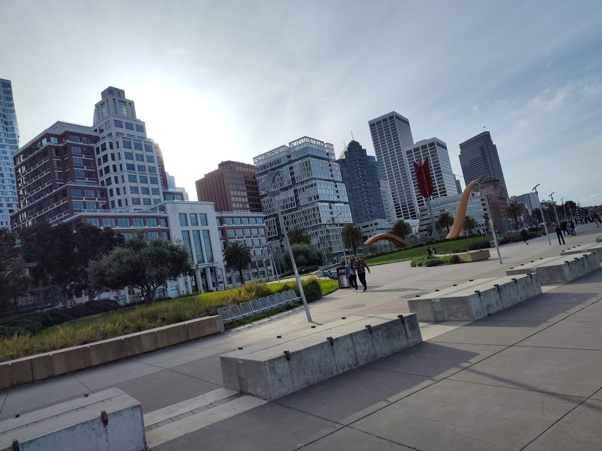

Urban Concierge - Bay Area
Friday Nov 6 – Sunday Nov 8, 2026 · Snapshot compiled Fri Nov 6, 2026, 2:05 pm PT (Urban Concierge - Bay Area)
- Coastal Flood Advisory, SF: through 4 pm Fri Nov 13. Up to 1.6 ft of inundation in low-lying shoreline areas.
- Beach Hazards Statement, SF: through 10 pm Mon Nov 9. Sneaker waves, rip currents, 12–16 ft breakers.
What's on


Fri Nov 6 – Sun Nov 8 (and ongoing)
ZooLights
San Francisco Zoo, Sloat Blvd at the Great Highway.
Details →
final performances through Sat Nov 7
Every Saturday Night (A.C.T. / SFBATCO)
Strand Theater, 1127 Market St.
Details →
Sat Nov 7, 8 am–2 pm
Ferry Plaza Farmers Market (Saturday)
Ferry Building, Embarcadero and Market.
Details →

More in this brief
Where to eat

No Yelp ratings (Yelp blocks automated loads). New picks this run (rotated off Quince, Benu, Californios), each from its Michelin Guide page (indexed) and/or the restaurant's own site.
Atelier Crenn, Cow Hollow / Fillmore, SF (3127 Fillmore St) · Contemporary / French · Michelin Three Stars. Chef Dominique Crenn; Michelin notes a pescatarian tasting menu that blends Brittany roots with California produce (including partner Bleu Belle Farm in Sonoma), strong sauces and seafood, and a procession of desserts from chef/partner Juan Contreras. Open Tue–Sat evenings per Michelin hours. +1 415-440-0460. https://guide.michelin.com/us/en/california/san-francisco/restaurant/atelier-crenn · https://www.ateliercrenn.com/
Lazy Bear, Mission, SF (3416 19th St) · Contemporary · Michelin Two Stars. Nightly tasting menu in a bi-level warehouse Michelin describes as decked out like a mogul's hunting lodge; notes a sweeping creative scope and bold flavors with flair (e.g. oysters two ways, A5 Wagyu). +1 415-874-9921. https://guide.michelin.com/us/en/california/san-francisco/restaurant/lazy-bear · https://www.lazybearsf.com/
Birdsong, SoMa, SF (1085 Mission St) · Contemporary / American · Michelin Two Stars. Chef Christopher Bleidorn; Michelin highlights live-fire cooking with a delicate touch — lacquered quail with Parker House rolls, creek trout, and a playful dessert finish. +1 415-369-9161. https://guide.michelin.com/us/en/california/san-francisco/restaurant/birdsong · https://www.birdsongsf.com/
Getting around

Muni and cable cars: $2.85 single ride with Clipper or tap-to-pay ($3.00 cash), good 120 min. Day pass $5.70. Cable car $9.00. Visitor Passports $15 / $35 / $47 (1/3/7-day). Youth 18 and under ride free (not cable cars; ages 4 and under ride cable cars free). A Chase Center event ticket is a same-day Muni fare (not cable cars). Sunday: F streetcar switchbacks toward the Ferry Building 8:30 am–3 pm and the 8, 28 and 39 reroute for the parade; the 6 Hayes/Parnassus reroutes outbound 5 am–7 pm for Head West. https://www.sfmta.com/getting-around/muni/fares
BART (live BSA ~2:04 pm Fri):
- No live delay advisories.
- Planned 30-min delays Millbrae–SFO–Daly City from 9 pm Sun–Thu.
- Yellow Line late-night single tracking in Contra Costa: next work dates Nov 9–11 and Nov 12–13 (the Nov 2–6 window is no longer listed).
- Elevators: API errored this afternoon; morning brief had all in service (Warm Springs cleared) — treat as unverified until re-checked.
- Carried: Powell St. entrance at 4th and Market closed through Nov 10 · Green Line out and 24th St–Daly City bus bridge Nov 14–15.
https://www.bart.gov/schedules/advisories
Bikes and scooters: Lyft Bike $1 to unlock + $0.19/min classic or $0.49/min ebike; day pass $15. https://www.lyft.com/bikes/bay-wheels/pricing
SFO: Rental Car Center via AirTrain Blue Line (24 hours). Lyft/Uber pick up on Level 5 of the Domestic Garage (terminal-matched zones); taxis at Arrivals/Baggage Claim center islands. https://www.flysfo.com/passengers/ground-transportation
Where to stay

Union Square has most major hotels and the best transit links. Civic Center/Hayes Valley puts you walking distance from Davies and the Opera House for Friday's concerts and Sunday's Head West market. For the Saturday market, Embarcadero hotels are steps from the Ferry Building; Fisherman's Wharf hotels are on the Sunday parade route, so expect street closures that morning. For ZooLights, the Sunset / Parkmerced side is closest to the Zoo. https://www.sftravel.com/neighborhoods
Assumptions and refresh
- Public data only. Re-checked Fri Nov 6, 2026, about 2:03–2:10 pm PT: NWS forecast grid and active alerts (via api.weather.gov), the Caltrans District 4 news index and key releases (Bay Bridge, Hospital Curve FINAL, SR-29, El Camino, I-280, Devil's Slide ended, Antioch Bridge, Mill Valley ramp, Marin US-101 CAPM), BART advisories and BSA API (elevator API errored), SFMTA Veterans Day and Head West pages plus Muni fares, Foodwise Ferry Plaza, A.C.T. Every Saturday Night, SF Opera fall concert, SF Zoo ZooLights, Warriors/Magic game page, Bay Wheels pricing, SFO ground transport, and Michelin/own-site restaurant pages (Michelin guide.michelin.com returned 403 to direct fetch; descriptions lean on indexed Michelin Guide page text plus restaurant sites where open). SF Symphony details confirmed via official season calendar PDF and indexed official/press snippets (direct ticket-page fetch hit a bot wall). Nobody was contacted and nothing was signed up for.
- The window is Fri through Sun (include early Mon morning closures that affect the weekend).
- This is a snapshot. Urban Concierge - Bay Area refreshes it every 8 hours (6 am, 2 pm, 10 pm PT). Times are Pacific standard time. Prices appear only where a cited page lists them.
Not verified
- Yelp ratings (blocked); restaurant hours and reservation availability not checked beyond what Michelin/own sites list.
- Every Saturday Night exact showtimes and prices; Symphony ticket prices; Inside Music Talk / lobby altar details from the morning brief were not re-confirmed on the bot-walled Symphony page.
- Head West Marketplace hours and vendors; the organizer's site doesn't list the Nov 8 date, so only SFMTA's closure notice confirms it.
- Carried Caltrans items (SR-12 Denverton, SR-37) weren't re-read in full this afternoon.
- Lime and Spin pricing not re-checked.
- Mill Valley ramp closure timing depends on tides; Caltrans gives no schedule.
- Warriors ticket prices not re-read; local TV call letters taken from the Warriors game page.
- Devil's Slide: official page still lists the Thu–Fri window; assumed ended after 4 am as scheduled — not re-confirmed live on QuickMap.
- BART elevator status: elevator API returned a server error this afternoon; last confirmed "all in service" was the 6:10 am brief.
What changed since the last brief
What changed since the last brief (Fri 6:10 am): BART’s morning East Bay–direction delay has cleared (no live advisories). Yellow Line late-night single tracking’s Nov 2–6 window is no longer listed; next nights are Nov 9–11 and Nov 12–13. NWS alerts were reissued 10:08 am Fri with weekend high-tide times (~9:38 am Sat and ~10:06 am Sun, ~7.4 ft MLLW). Sat high nudged to ~71; patchy fog Sat night into early Sun. Fri daytime Caltrans: El Camino Burlingame NB still closed until 6 pm; NB I-280 Skyline/Trousdale ends 4 pm. FINAL Hospital Curve SB US-101 still starts tonight 11 pm through Mon 6 am. All seven weekend events re-confirmed. Restaurant picks rotated off Quince / Benu / Californios.